Workshop Manual ➭ GENERAL INFORMATION ➭ GENERAL INFORMATION ➭ ELECTRICAL SYSTEM
ELECTRICAL SYSTEM
id000000000500
{: #wp1059776}
Electrical Parts
Battery cable
• Before disconnecting connectors or removing electrical parts, disconnect the negative battery cable.
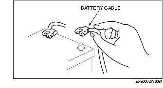
Wiring Harness
• To remove the wiring harness from the clip in the engine room, pry up the hook of the clip using a flathead screwdriver.{: #wp1059837}
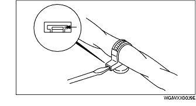
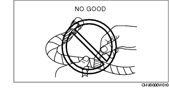
Caution
• Do not remove the wiring harness protective tape. Otherwise, the wires could rub against the body, which could result in water penetration and electrical shorting.
Connectors
Disconnecting connectors
• When disconnecting a connector, grasp the connectors, not the wires.
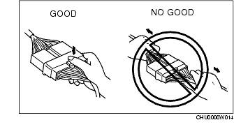
{: #wp1059923}• Connectors can be disconnected by pressing or pulling the lock lever as shown.
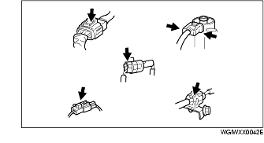
Locking connector
• When locking connectors, listen for a click indicating they are securely locked.
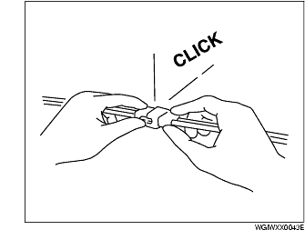
Inspection
• When a tester is used to inspect for continuity or measuring voltage, insert the tester probe from the wiring harness side.
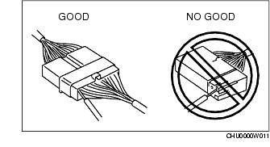
{: #wp1060032}• Inspect the terminals of waterproof connectors from the connector side since they cannot be accessed from the wiring harness side.
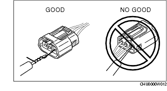
Caution
• To prevent damage to the terminal, wrap a thin wire around the tester probe before inserting into terminal.
Terminals
Inspection
• Pull lightly on individual wires to verify that they are secured in the terminal.
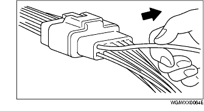
Replacement
• Use the appropriate tools to remove a terminal as shown. When installing a terminal, be sure to insert it until it locks securely.
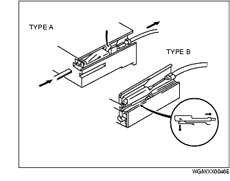
{: #wp1060169}• Insert a thin piece of metal from the terminal side of the connector and with the terminal locking tab pressed down, pull the terminal out from the connector.
Sensors, Switches, and Relays
• Handle sensors, switches, and relays carefully. Do not drop them or strike them against other objects.{: #wp1060220}
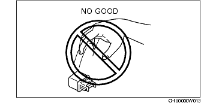
Wiring Harness
Wiring color codes
• Two-color wires are indicated by a two-color code symbol.
{: #wp1060271}• The first letter indicates the base color of the wire and the second is the color of the stripe.
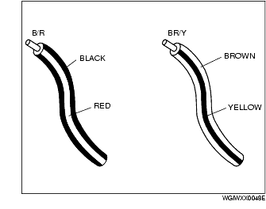
|
COLOR {: #wp1060427} |
CODE {: #wp1060429} |
COLOR {: #wp1060431} |
|
|---|---|---|---|
|
B {: #wp1060319} |
Black {: #wp1060321} |
O {: #wp1060377} |
Orange {: #wp1060380} |
|
BR {: #wp1060454} |
Brown {: #wp1060457} |
P {: #wp1060460} |
Pink {: #wp1060463} |
|
G {: #wp1060467} |
Green {: #wp1060470} |
R {: #wp1060473} |
Red {: #wp1060476} |
|
GY {: #wp1060480} |
Gray {: #wp1060483} |
V {: #wp1060486} |
Violet {: #wp1060489} |
|
L {: #wp1060493} |
Blue {: #wp1060496} |
W {: #wp1060499} |
White {: #wp1060502} |
|
LB {: #wp1060626} |
Light Blue {: #wp1060629} |
Y {: #wp1060632} |
Yellow {: #wp1060635} |
|
LG {: #wp1060659} |
Light Green {: #wp1060662} |
Fuse
Replacement
• When replacing a fuse, be sure to replace it with one of the same capacity. If a fuse malfunctions again, the circuit probably has a short and the wiring should be inspected.
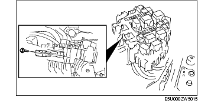
{: #wp1060712}• Be sure the negative battery terminal is disconnected before replacing a main fuse.
{: #wp1060743}• When replacing a pullout fuse, use the fuse puller.
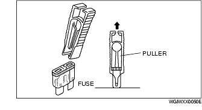
Viewing orientation for Connectors
• The viewing orientation for connectors is indicated with a symbol.
• The figures showing the viewing orientation are the same as those used in Wiring Diagrams.
• The viewing orientation are shown in the following three ways:
Part-side connector
The viewing orientation for part-side connectors is from the terminal side.{: #wp1060845}
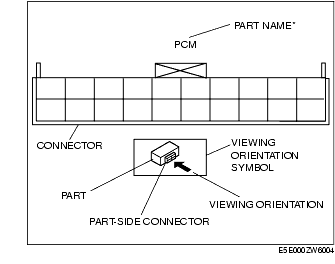
* : {: #wp1060869} Part names are shown only when there are multiple connector drawings.
Vehicle harness-side connector
The viewing orientation for vehicle wiring harness-side connectors is from the wiring harness side.{: #wp1060899}
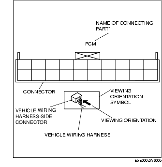
* : {: #wp1060923} Part names are shown only when there are multiple connector drawings.
Other
When it is necessary to show the terminal side of the vehicle wiring harness-side connectors, such as the following connectors, the viewing orientation is from the terminal side.{: #wp1060952}
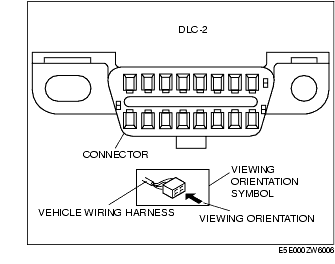
• Main fuse block and the main fuse block relays {: #wp1060976}• Data link connector {: #wp1060990}• Check connector {: #wp1061000}• Relay box
Electrical Troubleshooting Tools
Jumper wire
Caution
• Do not connect a jumper wire from the power source line to a body ground. This may cause burning or other damage to wiring harnesses or electronic components.
• A jumper wire is used to create a temporary circuit. Connect the jumper wire between the terminals of a circuit to bypass a switch.
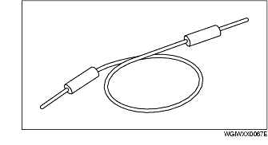
Voltmeter
• The DC voltmeter is used to measure circuit voltage. A voltmeter with a range of 15 V or more is used by connecting the positive (+) probe (red lead wire) to the point where voltage will be measured and the negative (-) probe (black lead wire) to a body ground.
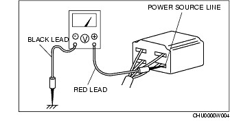
Ohmmeter
Caution
• Do not connect the ohmmeter to any circuit where voltage is applied. This will damage the ohmmeter.
• The ohmmeter is used to measure the resistance between two points in a circuit and to inspect for continuity and short circuits.
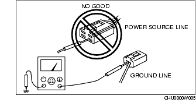
Precautions Before Welding
A vehicle has various electrical parts. To protect the parts from excessive current generated when welding, be sure to perform the following procedure.
-
Turn the ignition switch to the LOCK position.
-
Disconnect the battery cables.{: #wp1061227}
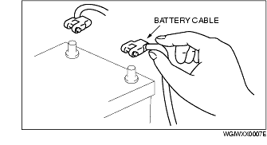
- Securely connect the welding machine ground near the welding area.{: #wp1061254}
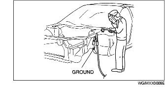
- Cover the peripheral parts of the welding area to protect them from weld spatter.